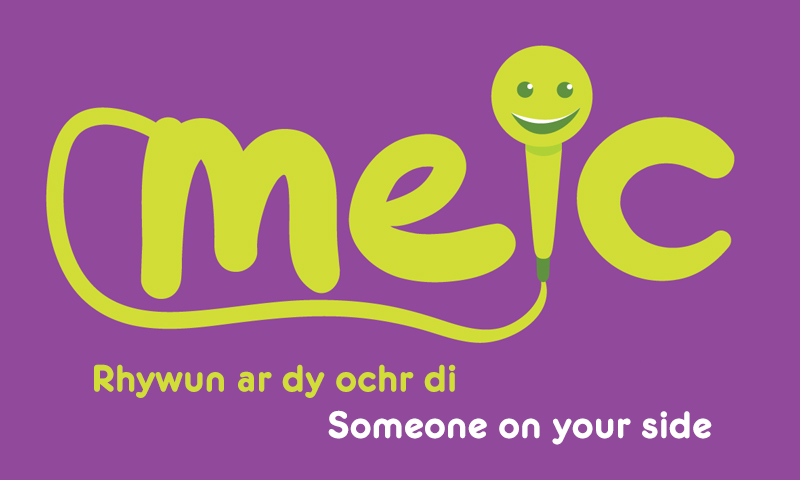

Click here when done to answer our short survey!
Welcome to the NObesity website, where you
can find top tips and tutorials to help you combat obesity!
Keeping your mental health in good condition is just as important as keeping physically fit. Always reach out to someone if you are feeling down. This could be a friend, a family member, a teacher or an online service such as Childline. Linked below are some free, private and confidential services where you can talk to someone who will help you work through your problems.
